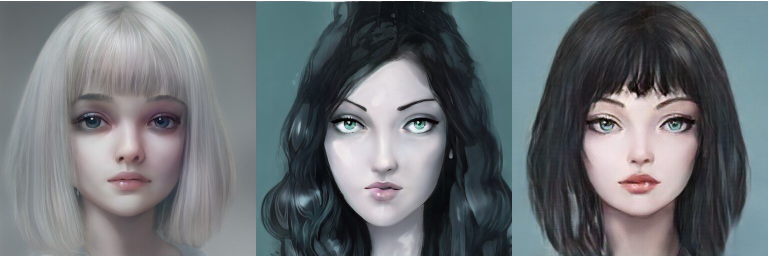

CATLAB
Conference Publications
-

WACV Fantastic Style Channels and Where to Find Them: A Submodular Framework for Discovering Diverse Directions in GANsWinter Conference on Applications of Computer Vision (WACV) , 2023 -
WACV Text and Image Guided 3D Avatar Generation and ManipulationWinter Conference on Applications of Computer Vision (WACV) , 2023 -
ECCV FairStyle: Debiasing StyleGAN2 with Style Channel ManipulationsEuropean Conference on Computer Vision (ECCV) , 2022 -
ACM CC MIDISpace: Finding Linear Directions in Latent Space for Music Generation (Honorable Mention Award)ACM Creativity & Cognition (ACM CC) , 2022 -
WACV StyleMC: Multi-Channel Based Fast Text-Guided Image Generation and ManipulationWinter Conference on Applications of Computer Vision (WACV) , 2022 -
ICCV LatentCLR: A Contrastive Learning Approach for Unsupervised Discovery of Interpretable DirectionsInternational Conference on Computer Vision (ICCV) , 2021
Workshop Publications
-
CVPR Workshop PaintInStyle: One-Shot Discovery of Interpretable Directions by PaintingConference on Computer Vision and Pattern Recognition (CVPR Workshop) , 2022 -
CVPR Workshop Rank in Style: A Ranking-based Approach to Find Interpretable DirectionsConference on Computer Vision and Pattern Recognition (CVPR Workshop) , 2022 -
NeurIPS Workshop Controlled Cue Generation for Play Scripts (Best Paper Award)Controllable Generative Modeling in Language and Vision (NeurIPS Workshop) , 2021 -
NeurIPS Workshop Exploring Latent Dimensions of Crowd-sourced CreativityMachine Learning for Creativity and Design (NeurIPS Workshop) , 2021 -

ICCV Workshop Graph2Pix: A Graph-Based Image to Image Translation Framework (Full Paper)Advances of Image Manipulation (ICCV Workshop) , 2021
News
| Aug 8, 2022 | One paper is accepted to ECCV’22, two papers are accepted to WACV’23! |
|---|---|
| Jun 28, 2022 |
Midispace received Honorable Mention Award at ACM Creativity & Cognition Conference! |
| Jan 28, 2022 |
CATLAB undergraduate researchers Cemre and Eylul won the best senior thesis award! |
| Dec 13, 2021 |
Controlled Cue Generation for Play Scripts is selected as the Best Paper at CTRLGen Workshop at NeurIPS’21! |
| Aug 22, 2021 | One paper is accepted to ICCV, and one paper is accepted to WACV! |
Team
Principal Investigator: Dr. Pinar YanardagGrad students: Enis Simsar (MSc, part-time), Alara Dirik (MSc, part-time)
Undergrad students: Umut Kocasari, Kerem Zaman, Zehranaz Canfes, Furkan Atasoy, Berkay Doner, Elif Sema Balcioglu, Merve Rabia Barin
Undergrad students (alumni): Oguz Kaan Yuksel (now at EPFL), Dilara Gokay (now at TUM), Mert Yuksekgonul (now at Stanford CS), Ezgi Gulperi Er (now at Goldman Sachs), Eylul Yalcinkaya (now at Facebook), Cemre Efe Karakas (now at Amazon)